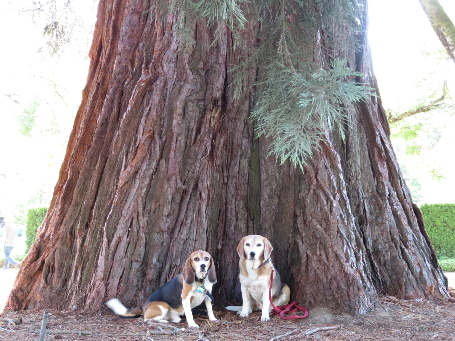

<--Previous Up Next-->

This park in central Salem is noteworthy in that it is just large enough to contain this sequoia, planted in 1872 by Judge William Waldo.
Huxley Beagle Oregon Salem Wallace Beagle